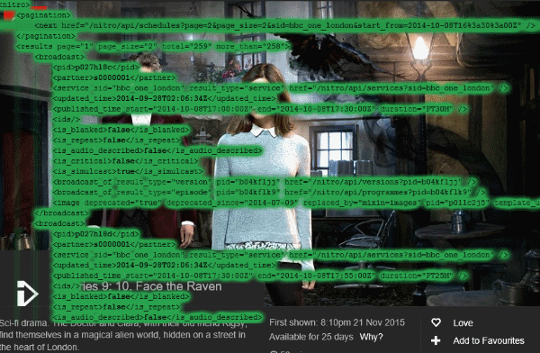

Mermade
/BBCparse
A nodejs-based BBC feed parser with category support and 30-day availability
Download as .zip
Download as .tar.gz
View on GitHub
Wiki
Open-source, open standards
Includes parsers for BBC /programmes and Nitro feeds
